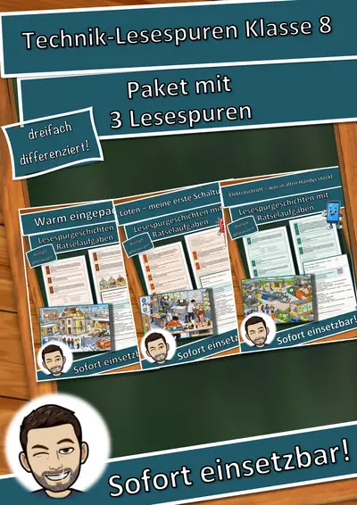
Materialpaket Lesespurgeschichten Technik Klasse 8: 3 Lesespuren mit Rätselaufgaben, dreifach differenziert

Materialpaket Lesespurgeschichten Chemie Klasse 8 – Stoffe, Feuer und Arbeiten im Labor: 18 Lesespuren mit Rätselaufgaben, dreifach differenziert

Materialpaket Lesespurgeschichten Chemie Klasse 8 – Chemie in Betrieb und Alltag: 13 Lesespuren mit Rätselaufgaben, dreifach differenziert

Lesespur: Ostereier natürlich färben: Farbstoffe und Indikatoren – Lesespurgeschichte mit Rätseln (Klasse 8)

Lesespur: Handwärmer: wie Wärme aus der Tasche entsteht – Lesespurgeschichte mit Rätseln (Klasse 8)

Lesespur: Streusalz und Gefrierpunkt: warum Salz Eis schmelzen lässt – Lesespurgeschichte mit Rätseln (Klasse 8)

Lesespur: Flammenfärbung: Metallsalze in der Brennerflamme nachweisen – Lesespurgeschichte mit Rätseln (Klasse 8)

Lesespur: Elektroschrott: was in alten Handys steckt – Lesespurgeschichte mit Rätseln (Klasse 8)

Lesespur: Die Gärung – Lesespurgeschichte mit Rätseln (Klasse 8)
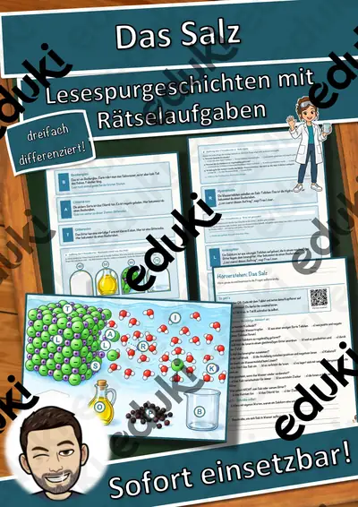
Lesespur: Das Salz – Lesespurgeschichte mit Rätseln (Klasse 8)

Lesespur: Das Atom – Lesespurgeschichte mit Rätseln (Klasse 8)
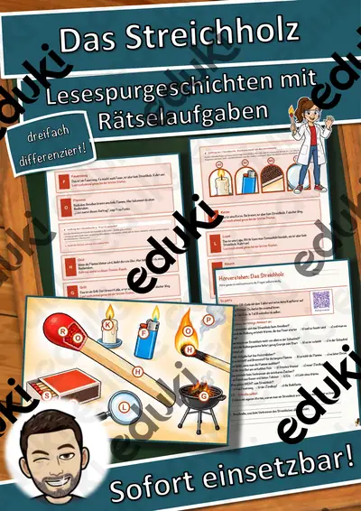
Lesespur: Das Streichholz – Lesespurgeschichte mit Rätseln (Klasse 8)

Lesespur: Die Filtration – Lesespurgeschichte mit Rätseln (Klasse 8)

Lesespur: Der Gasbrenner – Lesespurgeschichte mit Rätseln (Klasse 8)

Lesespur: Die Papierfabrik – Lesespurgeschichte mit Rätseln (Klasse 8)

Lesespur: Die Kerze – Lesespurgeschichte mit Rätseln (Klasse 8)

Lesespur: Die Konservenfabrik – Lesespurgeschichte mit Rätseln (Klasse 8)

Lesespur: Die Färberei – Lesespurgeschichte mit Rätseln (Klasse 8)

Lesespur: Die Chromatographie – Lesespurgeschichte mit Rätseln (Klasse 8)

Lesespur: Die Destillation – Lesespurgeschichte mit Rätseln (Klasse 8)

Lesespur: Der Bunsenbrenner – Lesespurgeschichte mit Rätseln (Klasse 8)

Lesespur: Der Feuerlöscher – Lesespurgeschichte mit Rätseln (Klasse 8)

Lesespur: Die Seifensiederei – Lesespurgeschichte mit Rätseln (Klasse 8)
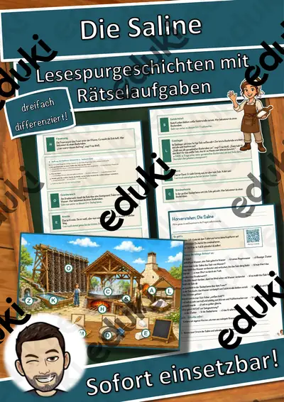
Lesespur: Die Saline – Lesespurgeschichte mit Rätseln (Klasse 8)

Lesespur: Die Molkerei – Lesespurgeschichte mit Rätseln (Klasse 8)
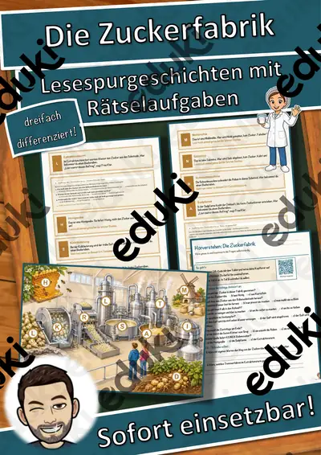
Lesespur: Die Zuckerfabrik – Lesespurgeschichte mit Rätseln (Klasse 8)

Lesespur: Der Atombau – Lesespurgeschichte mit Rätseln (Klasse 8)

Lesespur: Die chemische Reaktion – Lesespurgeschichte mit Rätseln (Klasse 8)

Lesespur: Das Labor – Lesespurgeschichte mit Rätseln (Klasse 8)

Lesespur: Die Glashütte – Lesespurgeschichte mit Rätseln (Klasse 8)

Materialpaket Prüfungstraining Chemie Klasse 8: 7 Übungshefte mit Prüfungsteil und Lösungen
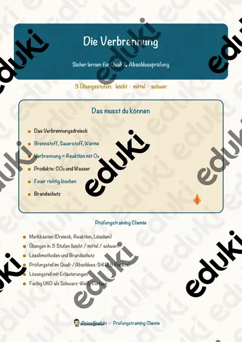
Die Verbrennung – Prüfungstraining Chemie (Klasse 8)
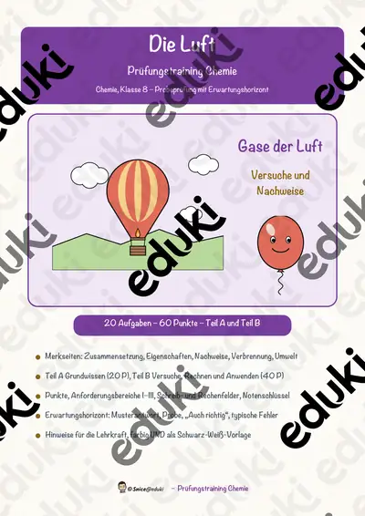
Die Luft – Prüfungstraining Chemie (Klasse 8)
Das Wasser – Prüfungstraining Chemie (Klasse 8)
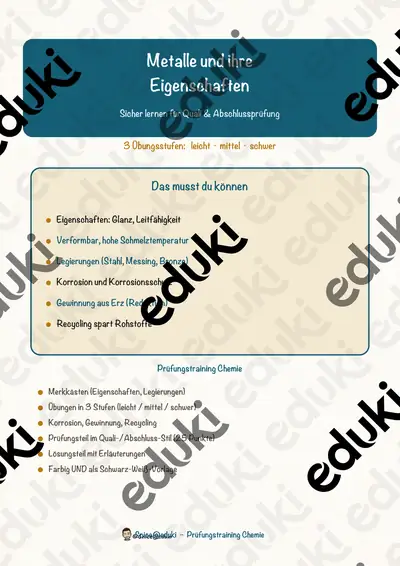
Metalle und ihre Eigenschaften – Prüfungstraining Chemie (Klasse 8)
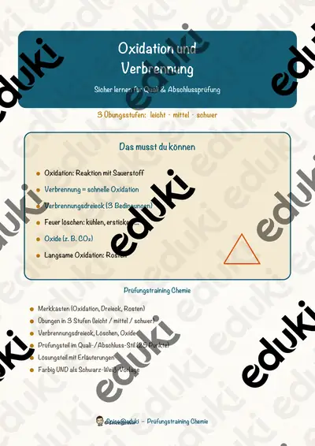
Oxidation und Verbrennung – Prüfungstraining Chemie (Klasse 8)
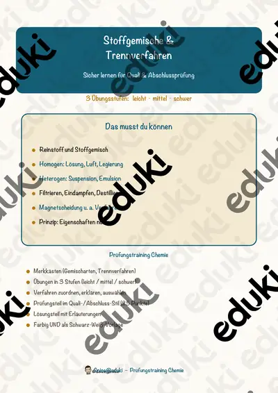
Stoffgemische und Trennverfahren – Prüfungstraining Chemie (Klasse 8)
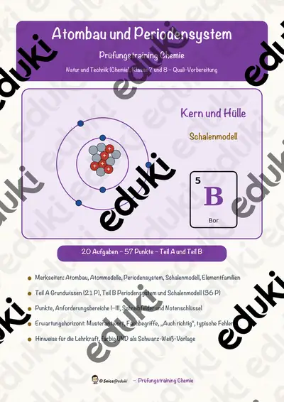
Atombau und Periodensystem – Prüfungstraining Chemie (Klasse 8)

Materialpaket Werkstücke

Werkstück Pfeife aus Aluminium inkl. Lösung
Keine Materialien gefunden – versuch einen anderen Suchbegriff oder Filter.